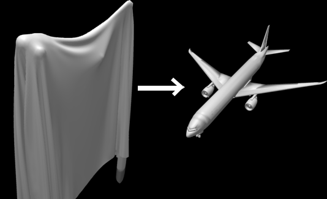
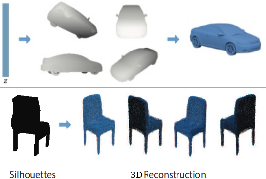

|
Research
My long-term research goal is to enable AI agents to have the ability to imagine (produce mental or abstract imagery without sensory inputs) by building models of the visual world and come up with concise and generalizable theories/solutions that can explain phenomena beyond what low-level statistics of observable data spells.
|
|
Research
My current hypothesis is that a learner needs to exploit compositionality in both its internal representations as well as its internal computations to continuously accumulate and organize knowledge in a way that useful for is extrapolation and transfer beyond the data it has seen before.
|
|

|
Perceiving Fully Occluded Objects via Physical Simulation
Yildirim, I.*, Siegel, M.*, Soltani, A.**, Chaudhuri, S.** & Tenenbaum, J.
(* and ** indicate equal contribution)
Manuscript in Preparation, 2018
A model-based, compositional perception system for recovering 3D shapes covered by cloth, with low sample complexity.
|
|

|
Synthesizing 3D Shapes via Modeling Multi-View Depth Maps and Silhouettes with Deep Generative Networks
Soltani, A., Huang, H., Wu, J., Kulkarni, T., & Tenenbaum, J.
IEEE Conference on Computer Vision and Pattern Recognition (CVPR) , 2017
Paper (PDF) /
Code /
Poster /
Slides
A generative model for generic 3D shapes to obtain abstract description of objects to be used for building model of the environment through inverse graphics.
|
|